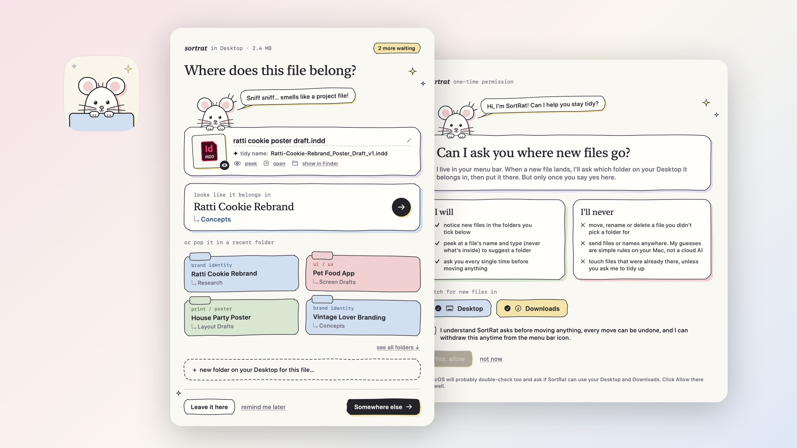
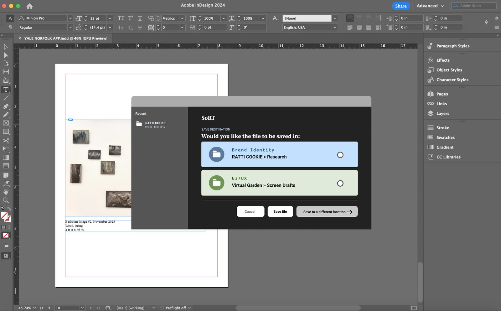
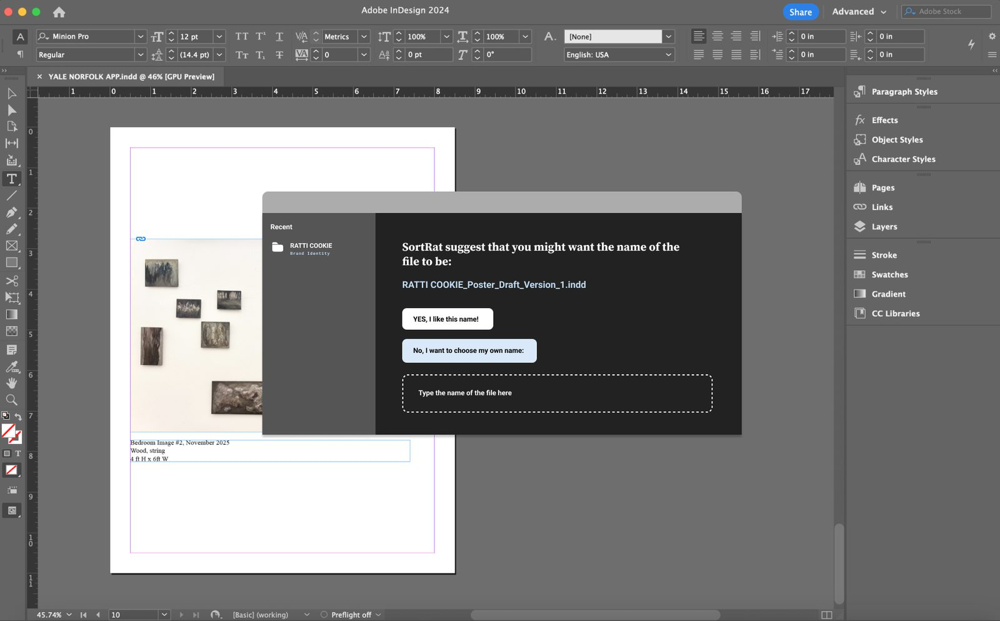
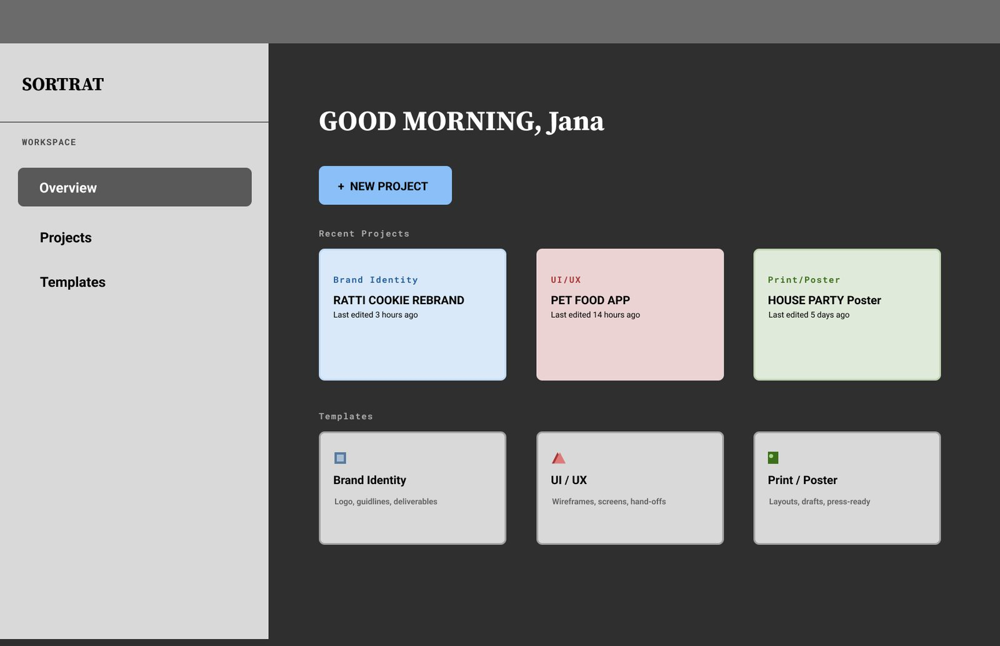
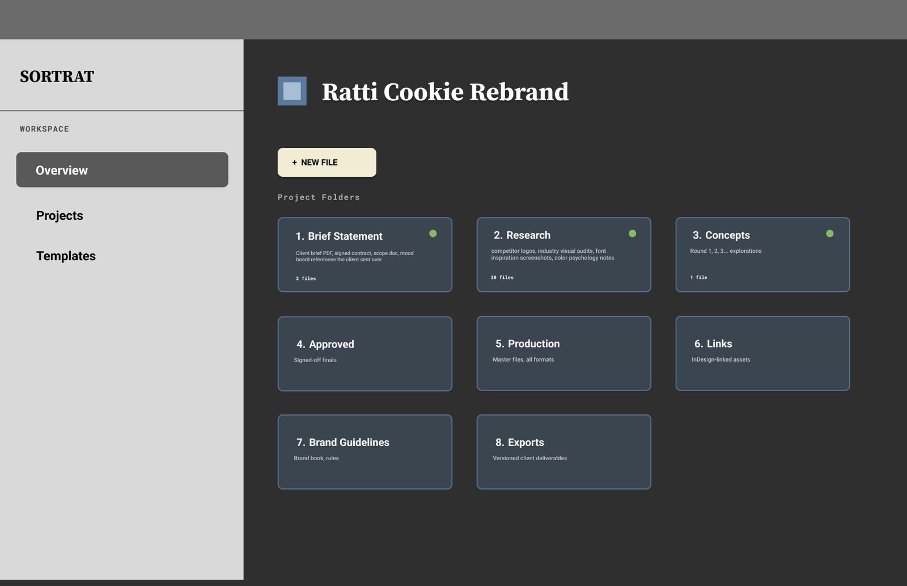
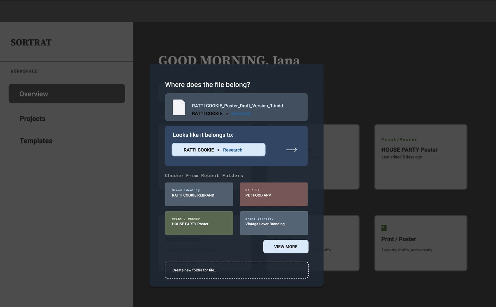
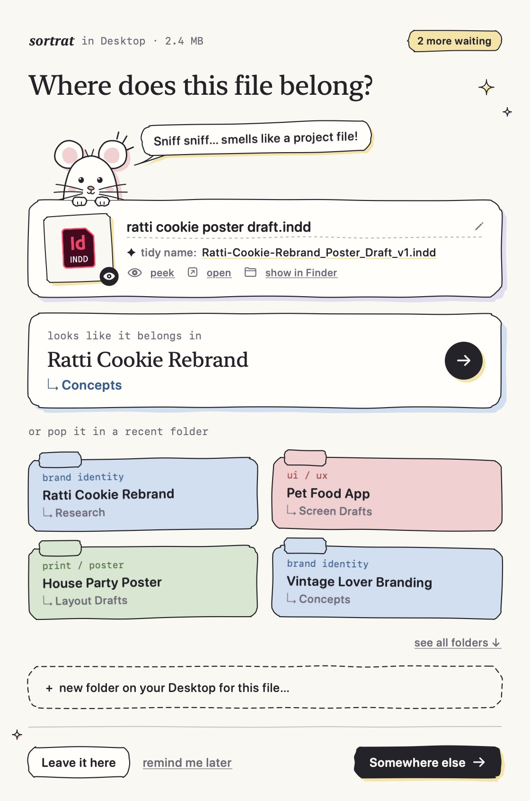
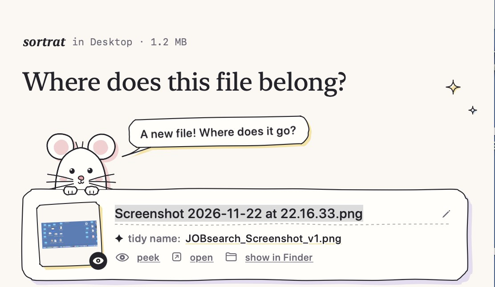
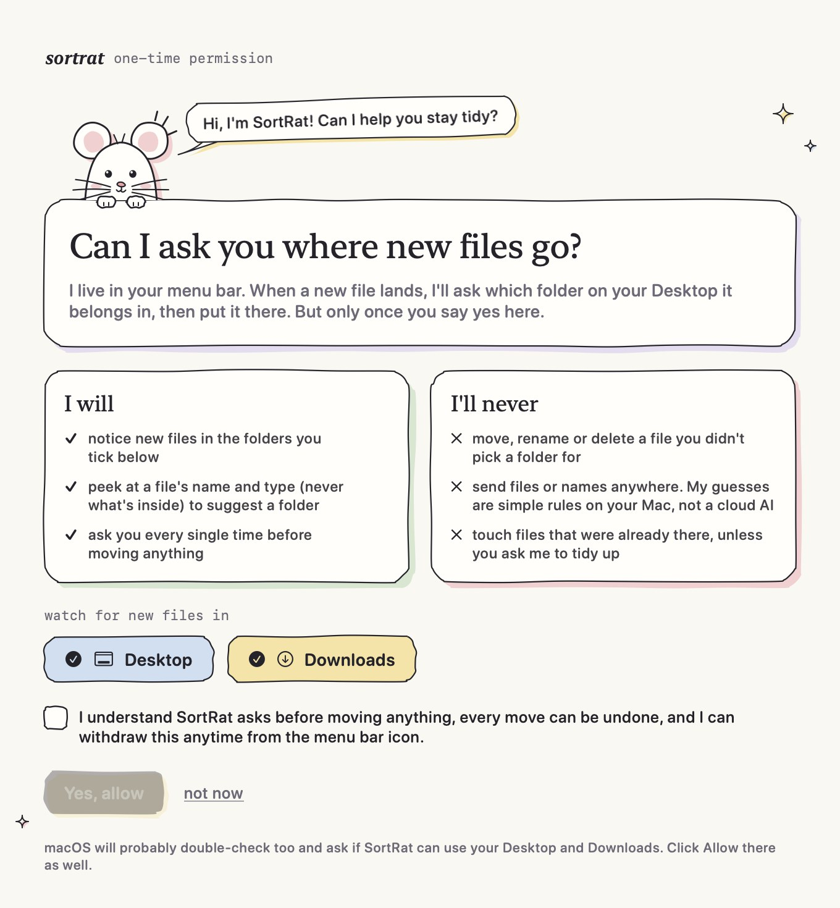

SortRat is a tiny Mac app that asks where a file belongs the moment it lands on your Desktop, built from research with 17 designers

Designers make a lot of files, fast: references, sketches, drafts, exports. Under a deadline they land wherever is quickest, usually the Desktop or Downloads, and stay there.
- Files end up “in random places or on the desktop”
- Naming feels tedious, so names stay unclear and files get lost
- Weeks later: “my files are everywhere and later that is hard to find”
SortRat shows up at the exact moment the mess starts. When a new file lands, a little rat pops up, suggests a folder and a tidy name, and files it in one click.
Nothing moves until you say so, every move can be undone, and it all runs on your Mac with no cloud and no AI service.
Organizing isn’t slow. Remembering to do it is.
My question was how interactive tools could help designers organize files so the design process runs more smoothly. I surveyed 17 designers with an average of 4–5 years of experience across graphic, web, UI/UX, type design and illustration, working for classes, organizations, clients and for fun.
Most said organizing isn’t very time-consuming: 10 of 17 rated it 1 or 2 out of 5. Yet asked why it’s still hard, they named time pressure, the sheer volume of files and storage scattered across devices. Sorting one file takes seconds. The trouble is that it never happens.
How time-consuming is organizing design files?
Where do you store files for design work?
Which design tools do you use?
Most designers keep their work on their own computer, which is why SortRat watches the Desktop and Downloads, where new files land first.
A workflow that keeps switching between paper and screen
I walked through a project with a designer who starts in a notebook, moves to Figma and Adobe tools, and often goes back to analog for posters, laser cutting and bookbinding. Every switch leaves files behind.
My files are everywhere and later that is hard to find.Interviewed designer, who tried Notion “but it only works for hyperlinks”
- ResearchLibrary material, artists online, Pinterest, Instagram, YouTube
- SketchNotebook drafts and storyboards, then drafts in Figma
- PrototypingLots of drafts in the first week, storyboards for motion
- Sharing & finalizingFigma on a screen, printed pin-ups, client presentations, then back to prototyping
Designing for Eloise
I put the survey and interview into one persona: a young graphic designer who is busy, a bit messy and short on time, and who has no consistent system for naming files.
Eloise Bridgerton
- age
- 22
- job
- Graphic designer
- works on
- Brand identity, zines, posters, web layouts
- tools
- Adobe Creative Suite, Figma, Canva
pain points
- Tight deadlines that squeeze out both creative quality and organization
- Often unmotivated to organize files because it’s tedious
- No consistent system for naming files, so they get lost later
- Struggles to divide an overwhelming number of files into categories and subfolders
- Limited storage on her laptop, but unwilling to pay for more cloud space
- stage 1New projectLots of raw images and sketches, on top of files from past projects.
- stage 2 · low pointTrying to stay organizedNaming and moving files takes time, and she forgets to put files in the right place.
- stage 3Gets helpStarts using a tool, but doesn’t know it yet.
- stage 4AdaptsLess time moving files by hand, but only if the tool fits how she already works.
- stage 5Part of the routineFinds files faster, every day.
The low point isn’t a lack of skill. It’s forgetting in the moment. That became the design target.
Product principles
Ask in the moment
The journey’s low point is forgetting, so the question comes when a file lands, not at the end of a project when there are hundreds.
Suggest, never decide
Nothing moves until you click. Somewhere else, leave it here and undo are always one step away.
Folders you already know
Secondary research on skeuomorphism and on standard project folders (assets, editable files, review, delivery) led to plain Desktop folders, not a new place to keep tidy.
Private by default
Suggestions are simple rules that read only a file’s name and type, on your Mac. Nothing is sent anywhere.
Three directions, two kept
The reminder became the core interaction. From the other two directions I kept project folders and stage-based templates.
A smart organization system
Projects with subfolders for each stage, and templates for common kinds of design work.
kept: folders & templatesA reminder that asks
When you save a file, a prompt reminds you to put it in the right place and offers a name.
kept: the coreA tutorial
Teaches naming, folders and subfolders, with templates for branding, UI/UX and print.
folded into templatesFrom a save dialog to a rat in the menu bar
Inside the save dialog
SortRat first lived in the moment you save a file in InDesign, suggesting a destination and then a name. But it only covered files saved from Adobe apps, not downloads or screenshots.


A dashboard of projects
Next came a full app: a home screen with recent projects and templates, project folders, and a dark version of the “where does this file belong?” prompt.



No dashboard at all
The dashboard was one more place to keep tidy. In the final version your Desktop folders are the projects. SortRat lives in the menu bar and only appears when a file lands. I also moved from the dark UI to a light, hand-drawn look: paper white, fine ink lines, offset pastel blocks and a line-drawn rat that peeks over the file.

I couldn’t tell what the file was
Running SortRat on my own Desktop, one of the first files it asked about was a photo called something like 1E3416B7-….JPG. A generic JPEG icon gave no clue where it belonged, so the suggestion was a guess.
The file card now shows a real thumbnail of what’s inside. Peek (⌘Y, like Finder) opens a full Quick Look preview on top of the prompt, next to open and show in Finder.

Asks at the right moment
A download finishes, you take a screenshot, you drag a file onto the Desktop: about two seconds later the rat peeks over the prompt. SortRat waits for half-finished downloads and leaves files that were already there alone, unless you ask it to tidy up.
9.41.07.pngbrief.pdfIMG_2207.jpg
Suggests a folder and a name
It matches the file’s name and type against your Desktop folders, then offers a tidy name. The version number goes up automatically. Starting something new? A new folder can come with template subfolders for Brand Identity, UI/UX, Print/Poster or a basic set.
ratti cookie poster draft.inddRatti-Cookie-Rebrand_Poster_Draft_v1.inddAlways your call
On first launch, a one-time permission window says what SortRat will and will never do, and lets you choose Desktop, Downloads or both. After that: put it somewhere else, leave it here, remind me in 30 minutes, or undo the last move from the menu bar.

Download SortRat for Mac
Free, about 1.4 MB. Runs on macOS 13 or later, on Apple Silicon and Intel Macs. Version 0.1.0.
Download SortRatSortRat isn’t signed with an Apple Developer ID yet, so macOS asks you to confirm the first time you open it. It only watches the folders you pick and never sends anything off your Mac.
- Open the downloadDouble-click
SortRat.dmgand drag SortRat into Applications. - Open it the first timeIn Applications, right-click SortRat, choose Open, then Open again.
- macOS 15 or later?If there’s no Open button, go to System Settings → Privacy & Security, scroll down and click Open Anyway.
- Say yes to the ratPick Desktop and/or Downloads, tick “I understand” and click Allow. Then drop a file on your Desktop.
What’s next
Test with designers
So far I’ve only used SortRat on my own Mac. Next is a week of real use with designers from the survey, to tune the suggestion rules and see whether the prompt helps or gets in the way.
Easy to install
Signing and notarizing the app with an Apple Developer ID so it opens with a normal double-click on anyone’s Mac, instead of the right-click workaround it needs today.
Try SortRat, or ask me about it
This page is a snapshot of the process. I’m happy to walk through the whole thing, and I’d love to hear how the rat works on your Desktop.
Download for Mac Email me